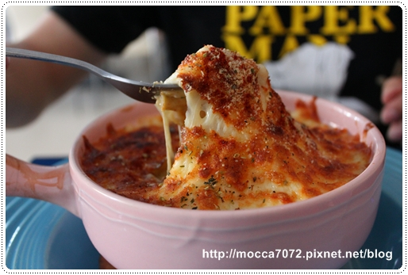
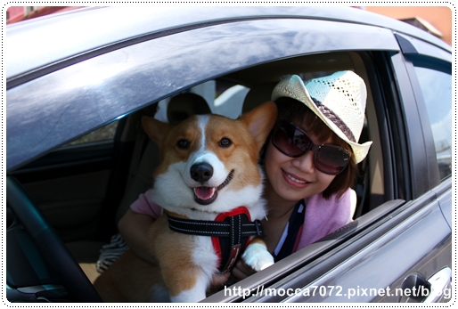
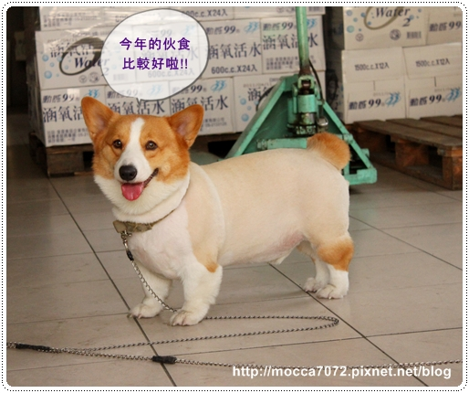
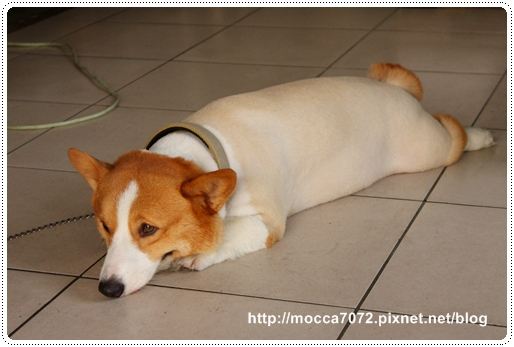
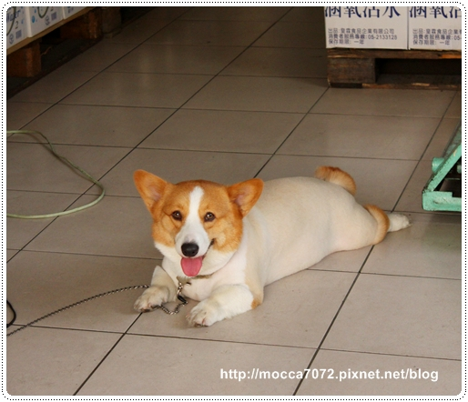

哇咧！墾丁回來都多久了還在Day3
不過第三天其實已經沒有行程了，起床後就到沙灘小酒館覓食去
順便幫摩卡卡拍拍寫真照～
而且這次拍到的照片都讓超滿意的～～.gif")
草帽卡卡～超有型！
從回來看到這張，我所有能換的大頭照都換成這個了 XD
墨鏡卡卡～這就符合娘砲特質了吧，有少女魂在裡面！
而且大頭的好處來了，墨鏡可以卡很緊很好拍～ㄎㄎ

這張我覺得好像可羊歐！?
我還沒機會看過羊羊本尊，就照片對照來看我覺得挺像的！

這張我也愛，只可惜摩卡卡不愛也不會親親這招！
想要得到他的吻的捧油就硬上吧！.gif")
而且只要有藍天、白雲、陽光加上愉快的心情 怎嘛拍都好看！

跟這小鬼很久沒拍到像樣的合照了！
他跟卡ㄋㄟ的合照的照片比我跟摩卡拔還多～

奶油焗烤香嫩雞腿飯
其實是店員做錯餐，但我們是好人幫他們解決麻煩，就接收了錯誤的餐點
不過還真有點後悔啊！哈哈 不是挺合我口味，飯有點濕
而且雞腿一直吃到要吐骨頭，我很討厭這種不能爽快大口吃肉的fu！

鮪魚鮮炒飯
這個也很普通，就炒飯來說飯也是不夠乾爽！
下次去還是乖乖點招牌>培根奶油＆白酒蛤蠣 這兩種就好！
大寶哥呢～就是摩卡卡的同胎的親哥哥，請點link>>無緣大寶哥
我們只要去墾丁玩，回程都會順路饒到雲林去看看他！

＝＝＝＝＝＝＝＝＝＝＝＝＝＝＝＝＝＝＝＝＝＝＝＝＝＝＝＝＝＝＝＝＝＝＝＝＝＝＝＝
但其實大寶哥現在的名字叫布丁啦！XD
是不是打同一個娘胎出來的，完全騙不了人滴！
因為大寶哥的"汗草"真的超好，腿更粗頭更大所以眼睛更小惹！XDDDD
連摩卡卡的招牌翻白眼他都有，基因真的太可怕啦！

另一隻米格魯是大寶哥的好朋友，叫Money
是他們在外面撿到帶回來照顧的，很有愛心的一家人！

這次去一看到大寶哥，我就發現他～變～胖～惹！
從小布丁變成大布丁了說！哈哈哈

去年的他剛結完紮還挺苗條的耶～
而且每到夏天他都要被嚕光光～所以都長一樣！哈
可惜惹～沒有發福的話我還可以偷拿去年的照片來用！
看照片今年應該胖有三公斤歐！
我也雞婆提醒他們不要讓他再胖下去會對腳 不好！
他們是很有概念的主人，所以大布丁今年要開始減肥啦！
希望明年看到你又恢復成小布丁歐～小布丁比大布丁好吃 (噗~離題惹!XD)

摩卡拔說這張把頭換成小豬的臉，就真的像小白豬惹！壞心
不過大寶哥的皮膚真是好！沒有一丁點的斑啊在身上～光滑的咧！

我說這對兄弟很多神韻跟動作都超像的！
像趴在地上看人的話是不會抬頭的，都會用上吊眼去瞄人，非常欠扁！！
而且吃東西也都慢吞吞，愛吃不吃！

唯一差別就是大寶哥比較會撒嬌～摩卡卡就是個硬漢！
會撒嬌的狗我好愛啊！我都靠卡ㄋㄟ的舌吻功來解憂鬱的！XDDD
近照四連拍~愈看愈可愛！
只可惜兄弟倆不能玩在一起，大寶哥的地盤性很重不給小弟接近！= =
而且他在那條街上可有名的咧～哈哈！
所有狗狗們看到他拔腿就跑，厲害了吧！

小眼睛家族萬歲～
大寶哥我們明年見～你要健健康康乖乖長大歐！

放張卡卡大頭照來比較一下～～

墾丁之旅終於寫完了！呼.........


 歌琳mur mur (3)
歌琳mur mur (3)


這兩兄弟真是太可愛了!!
害我也好想有小眼睛的毛小孩~~
我也好喜歡你和摩卡那張側照...不一樣的風格，摩卡拔厲害喔!!
沒錯..藍天、白雲、陽光...好嚮往啊~~
大寶哥真的很像放大版的摩卡卡XD
兩隻都是咖啡色眼線~
光滑白嫩的皮膚 好想摸一下XD
我本來想寫完日本行完結篇之後來糗你的說
沒想到你交作業惹~~~~XDD
摩卡卡的寫真集真是太好看了
果然有名模架勢！
這家也是要多鞭幾下才行,第3集拖到現在@@
快點把上星期跟卡ㄋㄟ出遊的文交出來
我家先生特別喜歡摩卡卡的小眼睛,很憨厚的樣子
摩卡大哥我覺得比較像可飛^_^
不過當然眼睛是靈魂 XDD~~
是說科基都很有成為小白豬的潛力。叫拔拔不要嘲笑大寶豬...不是，是大寶哥；說不定把卡卡剃光後，他渾然天成的搞笑功力又會更上一層樓~~~
你大哥真的跟你好像ㄚ~~~
如果他不剃毛
身材跟眼睛的比例應該更......
第四張我看到乳溝了......
是說：大寶哥哥是發福後的軟今天嗎？XDDD
ps→好奇問：第四張是鼻是有溝啊？還有第五張的插圖是要遮點嗎？(羞~~)
光看身體真的粉像可愛的.....小豬XD
但光看頭 跟摩卡卡真的很像 就...眼睛部份
但都一樣憨厚可愛啦~PS卡卡跟卡卡麻合照那張 超好看的
卡卡戴草帽那張真的好好看~~我好喜歡唷
布丁住雲林哪裡ㄚ?????
我是雲林人
每次帶豆花回雲林都沒遇到柯基ㄝ
粉紅豬造型真不賴
摩卡這次可是靠了前三張
穩坐科基型男的寶座囉
我愛草帽
ps.為什麼我覺得大寶哥眼睛比較大!
恭禧恭禧(撒花ing)
（最佳可愛獎）
卡卡最口愛啦....
終於等到帥帥摩卡牛仔惹~
麻豆帥
麻麻美
攝影師讚喔!
嗯!
第4張有些微妙....
還是跟他們講一聲比較好
不然他們會在廚房想半天>///<哈
原來大寶是摩卡的胞兄啊
漢草不錯吶 尤其是那前肢 很壯!!!
就粗勇的感覺
啾啾啾~
要他保持苗條的身材真的好辛苦喔！
哈哈
名模"卡"..名模"卡"
好Q啊...
看完大寶哥
只能說..果然孩子不能偷生啊
好像的fu啦~
卡卡戴帽子好帥唷！！！！
簽名～～～～XD
長的很像 眼睛一樣可愛ㄟ~~~
OMG~~
PS. 我終於知道摩卡卡變胖以後的樣子惹!!! XD
說是同個媽真的騙不了人耶....小眼萬歲